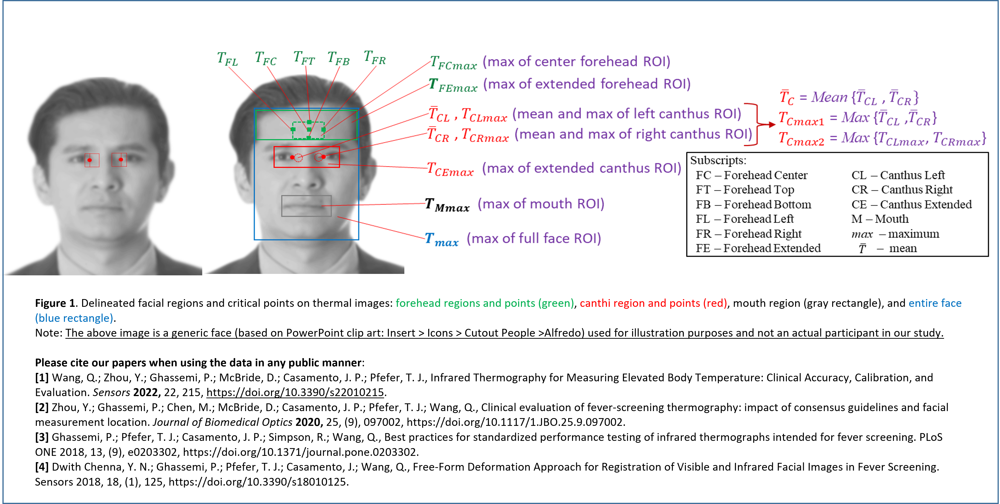
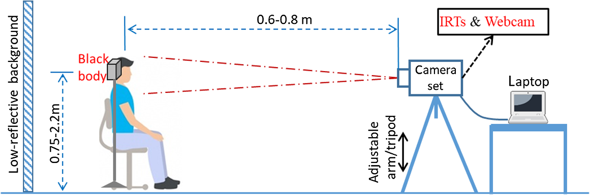
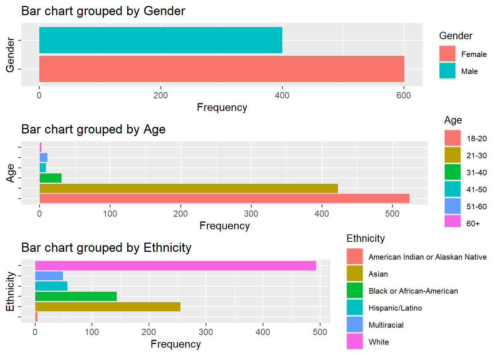
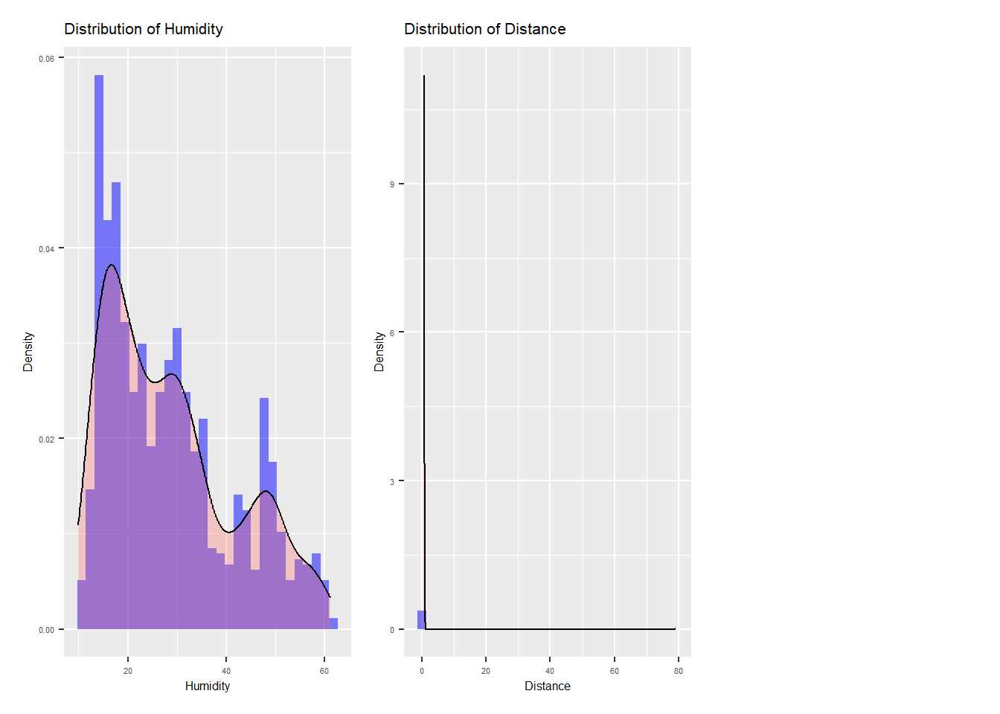
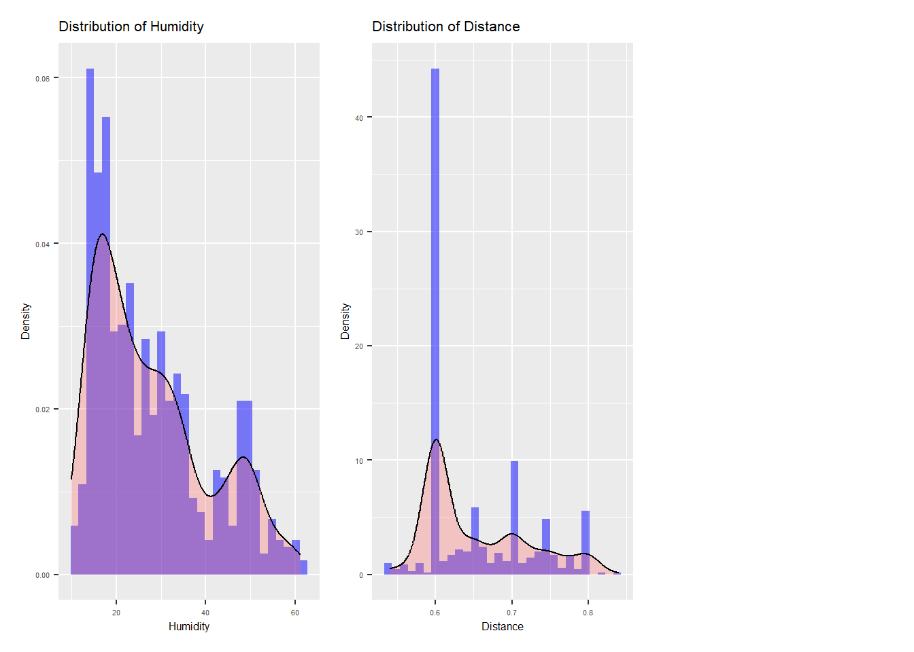
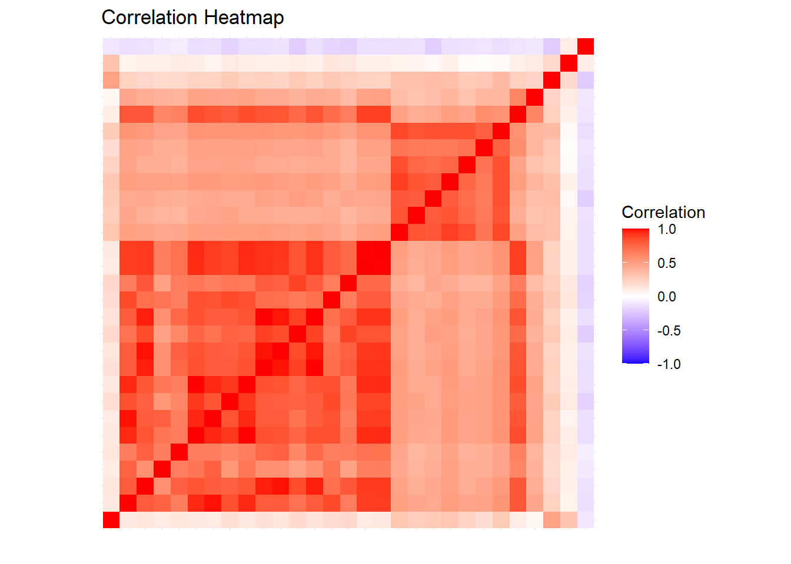
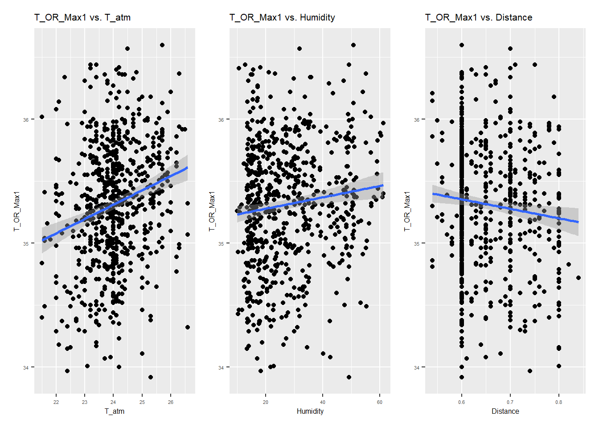
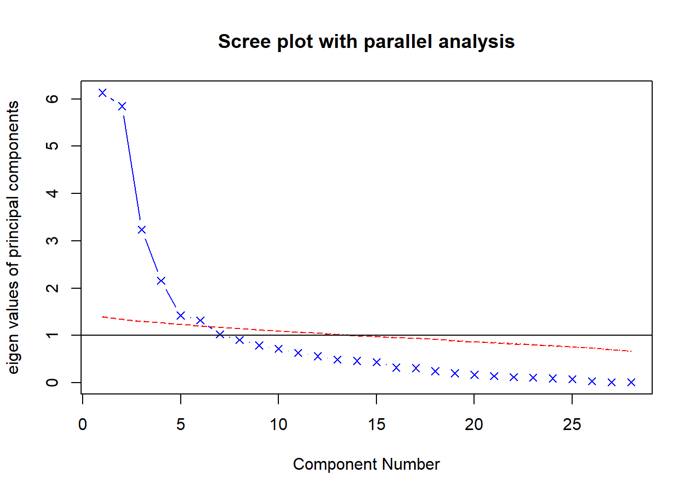
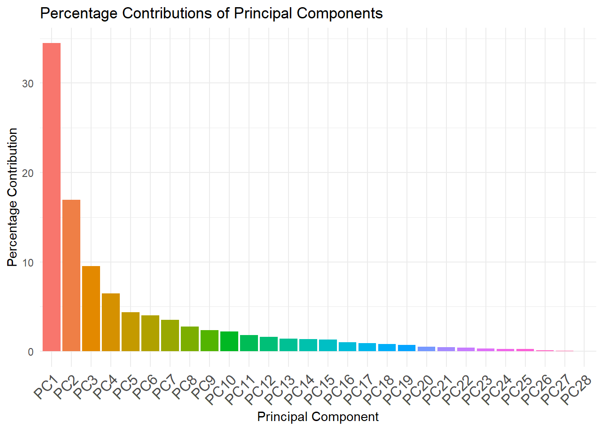

Analysis for Dataset ‘Infrared Thermography’
799 DSAN CapStone Project
Background
- Fever is typically common symptom of diseases such as the COVID19 that can severely threaten public health.
- When assessing fever symptoms, the oral temperature is the true value we aim to obtain. Measuring oral temperature for large crowds involves hygiene and time efficiency issues.
- Infrared thermography can quickly capture facial temperature Without direct contact with the human body.
- The goal is to establish a good model that predicts the oral temperature of individuals using quickly obtained facial temperature.
Data Source
- The original dataset, FLIR_groups1and2.csv, is available for download at https://doi.org/10.13026/3bhc-9065 (Wang et al. 2023).
- This file contains 1,020 observations and four rounds of measurements across 120 variables.
- For this project, which aims to develop a model for rapid screening, we have retained 32 variables from the first round of measurements, focusing on infrared thermography and environmental parameters, for our analysis.
Variables list
| Variable Name | Role | Type | Description |
|---|---|---|---|
| SubjectID | ID | Categorical | Subject ID |
| T_OR_Max1 | Target | Continuous | Oral temperature |
| Gender | Feature | Categorical | Male or Female |
| … | … | … | |
| … | … | … | |
| T_Max1 | Feature | Continuous | Maximum temperature within the whole face region |
Measure Guidance
Figure 1

Measure Guidance continued
Figure 2

The R Packages Used
Brief Look at the Selected Data
- There are a total of 32 variables and 1,020 observations.
- Some variables, such as ‘T_offset1’, have missing values.
- Some categorical data, like ‘Age’, have overlapping ranges such as ‘21-25’, ‘26-30’, and ‘21-30’, which should be combined into a single group to reduce complexity.
Dealing the Missing Data and Combine Age Group
# Convert all empty strings to NA
data_selected[data_selected == ""] <- NA
# Remove rows with any NA values
data_cleaned <- data_selected[complete.cases(data_selected), ]
# combine age 21-30 to one group
data_cleaned$Age[data_cleaned$Age == "21-25" | data_cleaned$Age == "26-30"] <- "21-30"
data_cleaned$Age[data_cleaned$Age == ">60" ] <- "60+"
# Hmisc::describe(data_cleaned)Plot Categorical Data

Process with Categorical Data to Numerical
mydataframe <- data_cleaned %>%
mutate(
# Encoding categorical variables
# Gender_Female as base line
Gender_M = ifelse(Gender == "Male", 1, 0),)
# Removing columns: 'Gender', 'Age', and 'Ethnicity'
mydataframe <- mydataframe[, !(names(mydataframe) %in% c("Gender", "Age", "Ethnicity"))]
# Ensure all variables are numerical
mydataframe <- mydataframe %>%
mutate_if(~ all(!is.na(as.numeric(as.character(.)))), as.numeric)Self Defined Descriptive statistics
To better describe the numerical data from the original measurements, we define a function that provides basic information such as sample size, mean, standard deviation, skewness, and kurtosis.
# Basic descriptive statistics
des_stats <- function(x, na.omit=FALSE){
if (na.omit)
x <- x[!is.na(x)]
m <- mean(x)
n <- length(x)
s <- sd(x)
skew <- sum((x-m)^3/s^3)/n
kurt <- sum((x-m)^4/s^4)/n - 3
return(c(n=n, mean=m, stdev=s,
skew=skew, kurtosis=kurt))
}
sapply(mydataframe[1:29], des_stats) T_offset1 Max1R13_1 Max1L13_1 aveAllR13_1 aveAllL13_1
n 1001.0000000 1001.0000000 1001.0000000 1001.0000000 1001.00000000
mean 0.9603896 35.5275325 35.5399401 34.7882517 34.90594406
stdev 0.4185555 0.6103086 0.5870455 0.8010727 0.71848071
skew 0.6325190 0.7788724 0.6380632 -0.2935453 -0.04830282
kurtosis 4.5039029 2.4011231 2.0659957 2.3833188 1.64233439
T_RC1 T_RC_Dry1 T_RC_Wet1 T_RC_Max1 T_LC1
n 1001.0000000 1001.0000000 1001.0000000 1001.0000000 1001.0000000
mean 35.5922877 35.5142258 35.4787812 35.6221279 35.5701399
stdev 0.5837500 0.6031786 0.6059537 0.5830048 0.5743379
skew 0.8807364 0.8053378 0.7359167 0.8820616 0.7096845
kurtosis 2.7000235 2.5329753 2.3889692 2.7033613 2.0980680
T_LC_Dry1 T_LC_Wet1 T_LC_Max1 RCC1 LCC1
n 1001.0000000 1001.0000000 1001.0000000 1001.0000000 1001.0000000
mean 35.5362438 35.3946953 35.6015684 35.1816783 35.1327273
stdev 0.5804356 0.6229043 0.5741002 0.6536831 0.6546552
skew 0.6848343 0.4178882 0.7082639 0.5745866 0.2512231
kurtosis 2.1166300 1.6974900 2.0939820 1.8732465 1.8038732
canthiMax1 canthi4Max1 T_FHCC1 T_FHRC1 T_FHLC1
n 1001.0000000 1001.0000000 1001.0000000 1001.0000000 1001.0000000
mean 35.7172128 35.6874426 34.4402498 34.4359740 34.4469930
stdev 0.5610792 0.5610754 0.7711031 0.7874477 0.7736153
skew 0.9910312 0.9952600 -0.7274469 -0.8856128 -0.6746324
kurtosis 2.6084703 2.6364560 2.6940562 3.5849533 2.2154211
T_FHBC1 T_FHTC1 T_FH_Max1 T_FHC_Max1 T_Max1
n 1001.0000000 1001.0000000 1001.0000000 1001.0000000 1001.0000000
mean 34.3452947 34.4324975 35.3561538 34.9995405 35.8206094
stdev 0.7701425 0.9141997 0.5627050 0.6428375 0.5308622
skew -0.6207007 -1.3304576 0.2122662 -0.4226499 1.0612231
kurtosis 2.4991055 4.8861606 2.2781230 2.6153255 2.9267537
T_OR_Max1 T_atm Humidity Distance
n 1001.0000000 1001.0000000 1001.0000000 1001.000000
mean 35.3290809 24.1204795 28.7625375 0.731009
stdev 0.6971657 1.3455966 13.0695289 2.477248
skew -0.2928126 0.5047649 0.6835440 31.508324
kurtosis 1.7341084 1.2645024 -0.6031495 992.512306Plot Numerical Data

Dealing the Outlier
Interquartile Range (IQR) \[ \text{IQR} = Q3 - Q1 \]
Lower Bound \[ lower_-bound = Q1 - 1.5 \times IQR \]
Upper Bound \[ upper_-bound = Q3 + 1.5 \times IQR \]
Plot Numerical Data w/o Outliers

Correlation Matrix Heatmap

Oral Temperature VS. Dependent Variables

Standardization of Data
$$
Standardized Value = $$
Split Data for Training and Testing by the Ration 80:20
Full Liner Regression Model
Call:
lm(formula = T_OR_Max1 ~ ., data = train_data)
Residuals:
Min 1Q Median 3Q Max
-2.4305 -0.4729 0.1262 0.5641 1.3968
Coefficients:
Estimate Std. Error t value Pr(>|t|)
(Intercept) -0.0403524 0.0426431 -0.946 0.34444
T_offset1 -0.1103248 0.0397636 -2.775 0.00572 **
Max1R13_1 -0.2336011 0.2270822 -1.029 0.30409
Max1L13_1 0.0599152 0.2300158 0.260 0.79459
aveAllR13_1 0.1027192 0.0672097 1.528 0.12703
aveAllL13_1 0.0604321 0.0642277 0.941 0.34719
T_RC1 0.7608109 0.7872684 0.966 0.33429
T_RC_Dry1 0.2819361 0.2354084 1.198 0.23159
T_RC_Wet1 0.2801456 0.1179915 2.374 0.01794 *
T_RC_Max1 -0.8971967 0.7390849 -1.214 0.22532
T_LC1 0.7005650 0.7427485 0.943 0.34601
T_LC_Dry1 0.0003762 0.3089001 0.001 0.99903
T_LC_Wet1 -0.0180984 0.1121093 -0.161 0.87181
T_LC_Max1 -0.8506549 0.6715548 -1.267 0.20582
RCC1 -0.0981621 0.0867169 -1.132 0.25816
LCC1 -0.0438804 0.0826842 -0.531 0.59585
canthiMax1 0.8335121 0.7723943 1.079 0.28102
canthi4Max1 -1.2996385 0.7928805 -1.639 0.10178
T_FHCC1 -0.1186885 0.0989227 -1.200 0.23075
T_FHRC1 -0.0726441 0.0680752 -1.067 0.28641
T_FHLC1 0.0980432 0.0700637 1.399 0.16230
T_FHBC1 0.2483280 0.0869825 2.855 0.00447 **
T_FHTC1 0.0050607 0.0746947 0.068 0.94601
T_FH_Max1 -0.1127790 0.0590556 -1.910 0.05671 .
T_FHC_Max1 0.0251103 0.0920137 0.273 0.78504
T_Max1 0.9546431 0.0806797 11.833 < 2e-16 ***
T_atm 0.0857441 0.0418758 2.048 0.04110 *
Humidity 0.0741832 0.0361173 2.054 0.04047 *
Distance -0.0241198 0.0357459 -0.675 0.50013
Gender_M 0.0580021 0.0727974 0.797 0.42595
---
Signif. codes: 0 '***' 0.001 '**' 0.01 '*' 0.05 '.' 0.1 ' ' 1
Residual standard error: 0.7652 on 527 degrees of freedom
Multiple R-squared: 0.4829, Adjusted R-squared: 0.4545
F-statistic: 16.97 on 29 and 527 DF, p-value: < 2.2e-16Full Regression and Stepwised Regression Model
Add interaction terms (for two predictors only) to the full linear model increases the R-squared value, bringing it closer to 1. However, it also significantly increases the model’s complexity. In our case, with 435 factors (29 dependent variables and 406 interaction terms) involved, this suggests potential overfitting.
A stepwise method (backward) provides a way to remove predictors from the full regression model above to reduce complexity. However, the resulting model formula remains overly complicated.
Improved Regression Model
flowchart TB A(Full Linear Regression) --> B(Stepwise Regression) B --> C(Add Interaction Terms) C --> D(2nd Stepwise Regression) D --> E(Final model)
Summary of the Improved Regression Model
Call:
lm(formula = T_OR_Max1 ~ T_offset1 + Max1R13_1 + aveAllR13_1 +
T_RC_Dry1 + T_RC_Wet1 + canthi4Max1 + T_FHBC1 + T_FH_Max1 +
T_Max1 + T_atm + Humidity + T_offset1:aveAllR13_1 + T_offset1:T_FHBC1 +
T_offset1:T_atm + aveAllR13_1:T_FHBC1 + aveAllR13_1:Humidity +
T_RC_Dry1:canthi4Max1 + T_RC_Dry1:T_FHBC1 + T_RC_Dry1:T_Max1 +
T_RC_Dry1:Humidity + T_RC_Wet1:canthi4Max1 + T_RC_Wet1:T_Max1 +
T_RC_Wet1:T_atm + T_RC_Wet1:Humidity + canthi4Max1:T_FH_Max1 +
T_FHBC1:Humidity + T_FH_Max1:T_Max1 + T_FH_Max1:T_atm + T_Max1:T_atm,
data = train_data)
Residuals:
Min 1Q Median 3Q Max
-2.1722 -0.4166 0.1103 0.4980 1.4805
Coefficients:
Estimate Std. Error t value Pr(>|t|)
(Intercept) 0.16842 0.04254 3.959 8.57e-05 ***
T_offset1 -0.09034 0.03696 -2.445 0.01483 *
Max1R13_1 -0.37278 0.19174 -1.944 0.05240 .
aveAllR13_1 0.07544 0.05265 1.433 0.15249
T_RC_Dry1 0.36768 0.19162 1.919 0.05555 .
T_RC_Wet1 0.12638 0.07013 1.802 0.07209 .
canthi4Max1 -0.97059 0.11841 -8.197 1.88e-15 ***
T_FHBC1 0.14525 0.04800 3.026 0.00260 **
T_FH_Max1 -0.08115 0.04659 -1.742 0.08214 .
T_Max1 1.37546 0.08940 15.385 < 2e-16 ***
T_atm 0.07611 0.03726 2.043 0.04159 *
Humidity 0.10073 0.03351 3.006 0.00277 **
T_offset1:aveAllR13_1 0.08233 0.04110 2.003 0.04566 *
T_offset1:T_FHBC1 -0.05869 0.03934 -1.492 0.13631
T_offset1:T_atm -0.07065 0.03049 -2.317 0.02088 *
aveAllR13_1:T_FHBC1 -0.10754 0.05236 -2.054 0.04051 *
aveAllR13_1:Humidity -0.10652 0.05750 -1.853 0.06451 .
T_RC_Dry1:canthi4Max1 -0.41477 0.14505 -2.859 0.00441 **
T_RC_Dry1:T_FHBC1 0.10885 0.05778 1.884 0.06013 .
T_RC_Dry1:T_Max1 0.29565 0.13922 2.124 0.03417 *
T_RC_Dry1:Humidity 0.18327 0.07477 2.451 0.01456 *
T_RC_Wet1:canthi4Max1 -0.21746 0.13200 -1.647 0.10006
T_RC_Wet1:T_Max1 0.19441 0.13013 1.494 0.13578
T_RC_Wet1:T_atm 0.17655 0.05490 3.216 0.00138 **
T_RC_Wet1:Humidity -0.17378 0.05891 -2.950 0.00332 **
canthi4Max1:T_FH_Max1 0.42607 0.07210 5.910 6.16e-09 ***
T_FHBC1:Humidity 0.08976 0.03981 2.255 0.02455 *
T_FH_Max1:T_Max1 -0.27661 0.06898 -4.010 6.96e-05 ***
T_FH_Max1:T_atm -0.06392 0.03826 -1.671 0.09535 .
T_Max1:T_atm -0.14386 0.05969 -2.410 0.01630 *
---
Signif. codes: 0 '***' 0.001 '**' 0.01 '*' 0.05 '.' 0.1 ' ' 1
Residual standard error: 0.7005 on 527 degrees of freedom
Multiple R-squared: 0.5667, Adjusted R-squared: 0.5428
F-statistic: 23.76 on 29 and 527 DF, p-value: < 2.2e-16 T_offset1 Max1R13_1 aveAllR13_1
1.588778 41.989761 3.036011
T_RC_Dry1 T_RC_Wet1 canthi4Max1
41.719901 5.685309 15.777151
T_FHBC1 T_FH_Max1 T_Max1
2.727546 2.508126 9.123867
T_atm Humidity T_offset1:aveAllR13_1
1.542628 1.262523 1.707703
T_offset1:T_FHBC1 T_offset1:T_atm aveAllR13_1:T_FHBC1
2.120347 1.383515 3.426110
aveAllR13_1:Humidity T_RC_Dry1:canthi4Max1 T_RC_Dry1:T_FHBC1
3.389069 35.459508 4.699374
T_RC_Dry1:T_Max1 T_RC_Dry1:Humidity T_RC_Wet1:canthi4Max1
33.710904 6.067767 29.592164
T_RC_Wet1:T_Max1 T_RC_Wet1:T_atm T_RC_Wet1:Humidity
27.806219 3.514764 3.653173
canthi4Max1:T_FH_Max1 T_FHBC1:Humidity T_FH_Max1:T_Max1
6.890518 1.840454 6.873623
T_FH_Max1:T_atm T_Max1:T_atm
1.864243 3.790260 Impove the Model with PCA
Principal Component Analysis (PCA) transforms the predictors into a set of uncorrelated components, reducing the number of variables without losing much information. Using too many predictors can lead to overfitting and complicate the interpretation of the analysis.
scree plot

components contributtion
[1] "Accumulated contribution up to component 1 : 34.47 %"
[1] "Accumulated contribution up to component 2 : 51.43 %"
[1] "Accumulated contribution up to component 3 : 60.94 %"
[1] "Accumulated contribution up to component 4 : 67.42 %"
[1] "Accumulated contribution up to component 5 : 71.8 %"
[1] "Accumulated contribution up to component 6 : 75.81 %"
[1] "Accumulated contribution up to component 7 : 79.34 %"
[1] "Accumulated contribution up to component 8 : 82.1 %"
[1] "Accumulated contribution up to component 9 : 84.46 %"
[1] "Accumulated contribution up to component 10 : 86.66 %"
[1] "Accumulated contribution up to component 11 : 88.48 %"
[1] "Accumulated contribution up to component 12 : 90.09 %"
[1] "Accumulated contribution up to component 13 : 91.49 %"
[1] "Accumulated contribution up to component 14 : 92.85 %"
[1] "Accumulated contribution up to component 15 : 94.15 %"
[1] "Accumulated contribution up to component 16 : 95.18 %"
[1] "Accumulated contribution up to component 17 : 96.09 %"
[1] "Accumulated contribution up to component 18 : 96.91 %"
[1] "Accumulated contribution up to component 19 : 97.64 %"
[1] "Accumulated contribution up to component 20 : 98.14 %"
[1] "Accumulated contribution up to component 21 : 98.58 %"
[1] "Accumulated contribution up to component 22 : 98.97 %"
[1] "Accumulated contribution up to component 23 : 99.3 %"
[1] "Accumulated contribution up to component 24 : 99.57 %"
[1] "Accumulated contribution up to component 25 : 99.82 %"
[1] "Accumulated contribution up to component 26 : 99.92 %"
[1] "Accumulated contribution up to component 27 : 99.97 %"
[1] "Accumulated contribution up to component 28 : 100 %"components contributtion continued

linear model with six components
Call:
lm(formula = T_OR_Max1 ~ ., data = train_data_pca)
Residuals:
Min 1Q Median 3Q Max
-2.56805 -0.53953 0.04293 0.62484 1.89648
Coefficients:
Estimate Std. Error t value Pr(>|t|)
(Intercept) 0.010084 0.046457 0.217 0.8282
PC1 -0.007296 0.013137 -0.555 0.5788
PC2 0.235647 0.014889 15.827 <2e-16 ***
PC3 -0.039088 0.019824 -1.972 0.0491 *
PC4 -0.018475 0.024275 -0.761 0.4470
PC5 0.055235 0.029022 1.903 0.0575 .
PC6 -0.030685 0.030082 -1.020 0.3082
---
Signif. codes: 0 '***' 0.001 '**' 0.01 '*' 0.05 '.' 0.1 ' ' 1
Residual standard error: 0.8583 on 550 degrees of freedom
Multiple R-squared: 0.321, Adjusted R-squared: 0.3136
F-statistic: 43.34 on 6 and 550 DF, p-value: < 2.2e-16 PC1 PC2 PC3 PC4 PC5 PC6
1.016655 1.002594 1.000763 1.006119 1.011774 1.001972 Ridge Regression
Ridge Regression adds a penalty equal to the square of the magnitude of the coefficients, helping to reduce the impact of multicollinearity.
# Prepare the data
x_train <- model.matrix(T_OR_Max1 ~ T_offset1 + Max1R13_1 + aveAllR13_1 + T_RC_Dry1 + T_RC_Wet1 + canthi4Max1 + T_FHBC1 + T_FH_Max1+
T_Max1 + T_atm + Humidity + T_offset1:aveAllR13_1 +
T_offset1:T_FHBC1 +
T_offset1:T_atm + aveAllR13_1:T_FHBC1 +
aveAllR13_1:Humidity +
T_RC_Dry1:canthi4Max1 + T_RC_Dry1:T_FHBC1 +
T_RC_Dry1:T_Max1 +
T_RC_Dry1:Humidity + T_RC_Wet1:canthi4Max1 +
T_RC_Wet1:T_Max1 +
T_RC_Wet1:T_atm + T_RC_Wet1:Humidity +
canthi4Max1:T_FH_Max1 +
T_FHBC1:Humidity + T_FH_Max1:T_Max1 + T_FH_Max1:T_atm +
T_Max1:T_atm, train_data)[,-1]
y_train <- train_data$T_OR_Max1
# Ridge Regression
set.seed(42)
ridge_model <- cv.glmnet(x_train, y_train, alpha = 0) # alpha = 0 for ridge
best_lambda_ridge <- ridge_model$lambda.min
# Fit the final ridge model
ridge_final <- glmnet(x_train, y_train, alpha = 0, lambda = best_lambda_ridge)
# Extract coefficients
ridge_coefficients <- coef(ridge_final)
# Print coefficients
# print(ridge_coefficients)
# Construct the equation
intercept <- ridge_coefficients[1] # Intercept
coefficients <- ridge_coefficients[-1] # Coefficients for predictors
predictor_names <- colnames(x_train)Ridge Regression Equation
Ridge Regression Equation:T_OR_Max1 = 0.08592975 +(-0.0947 * T_offset1) +
(-0.0980 * Max1R13_1) +
(0.0915 * aveAllR13_1) +
(0.0285 * T_RC_Dry1) +
(0.0537 * T_RC_Wet1) +
(-0.2444 * canthi4Max1) +
(0.1146 * T_FHBC1) +
(-0.0107 * T_FH_Max1) +
(0.7387 * T_Max1) +
(0.0816 * T_atm) +
(0.0954 * Humidity) +
(0.0633 * T_offset1:aveAllR13_1) +
(-0.0413 * T_offset1:T_FHBC1) +
(-0.0616 * T_offset1:T_atm) +
(-0.0877 * aveAllR13_1:T_FHBC1) +
(-0.0216 * aveAllR13_1:Humidity) +
(-0.1070 * T_RC_Dry1:canthi4Max1) +
(0.0682 * T_RC_Dry1:T_FHBC1) +
(0.0109 * T_RC_Dry1:T_Max1) +
(0.0773 * T_RC_Dry1:Humidity) +
(-0.0570 * T_RC_Wet1:canthi4Max1) +
(0.0374 * T_RC_Wet1:T_Max1) +
(0.1129 * T_RC_Wet1:T_atm) +
(-0.0950 * T_RC_Wet1:Humidity) +
(0.2323 * canthi4Max1:T_FH_Max1) +
(0.0393 * T_FHBC1:Humidity) +
(-0.0784 * T_FH_Max1:T_Max1) +
(-0.0311 * T_FH_Max1:T_atm) +
(-0.0984 * T_Max1:T_atm)Evaluate the model
\[ RMSE = \sqrt{\frac{1}{n} \sum_{i=1}^{n} (\hat{y_i} - y_i)^2} \]
\[ R^2 = 1 - \frac{RSS}{TSS} \]
Caculated value based on Ridge model: R-squared : 0.5144992 RMSE on Training Data: 0.7211868 RMSE on Testing Data: 0.7401346